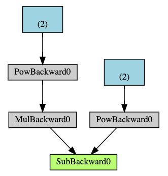

备注
点击此处下载完整示例代码
对 torch.autograd ¶的温和介绍
创建于：2025 年 4 月 1 日 | 最后更新：2025 年 4 月 1 日 | 最后验证：2024 年 11 月 5 日
torch.autograd 是 PyTorch 的自动微分引擎，为神经网络训练提供动力。在本节中，您将获得对 autograd 如何帮助神经网络训练的概念性理解。
背景 ¶
神经网络（NNs）是一系列嵌套函数的集合，这些函数在输入数据上执行。这些函数由参数（由权重和偏差组成）定义，在 PyTorch 中这些参数存储在张量中。
训练神经网络分为两个步骤：
前向传播：在前向传播中，神经网络对其正确的输出做出最佳猜测。它将输入数据通过其每个函数来生成这个猜测。
反向传播：在反向传播中，神经网络根据其猜测的错误调整其参数。它是通过从输出反向遍历，收集误差相对于函数参数的导数（梯度），并使用梯度下降法优化参数来实现的。要详细了解反向传播，请查看 3Blue1Brown 的此视频。
在 PyTorch 中的使用 ¶
让我们看看单个训练步骤。例如，我们从这个预训练的 resnet18 模型中加载一个预训练模型。我们创建一个随机的数据张量来表示一个具有 3 个通道、高度和宽度为 64 的单个图像，以及相应的标签，其形状为(1,1000)。
备注
本教程只能在 CPU 上运行，在 GPU 设备上无法运行（即使张量已移动到 CUDA）。
import torch
from torchvision.models import resnet18, ResNet18_Weights
model = resnet18(weights=ResNet18_Weights.DEFAULT)
data = torch.rand(1, 3, 64, 64)
labels = torch.rand(1, 1000)
然后，我们将输入数据通过模型的每一层进行预测。这是正向传播。
prediction = model(data) # forward pass
我们使用模型的预测和相应的标签来计算误差（ loss ）。下一步是将这个误差反向传播到网络中。当我们调用 .backward() 对误差张量进行操作时，自动微分开始计算并存储每个模型参数的梯度，存储在参数的 .grad 属性中。
loss = (prediction - labels).sum()
loss.backward() # backward pass
接下来，我们加载一个优化器，在这种情况下是学习率为 0.01、动量为 0.9 的 SGD。我们将模型的全部参数注册到优化器中。
optim = torch.optim.SGD(model.parameters(), lr=1e-2, momentum=0.9)
最后，我们调用 .step() 来启动梯度下降。优化器通过存储在 .grad 中的梯度调整每个参数。
optim.step() #gradient descent
到目前为止，你已经拥有了训练你的神经网络所需的一切。下面的章节详细介绍了 autograd 的工作原理——你可以自由地跳过它们。
Autograd 中的微分 ¶
让我们看看如何使用 autograd 收集梯度。我们使用 requires_grad=True 创建了两个张量 a 和 b 。这表示对它们的每个操作都应该被追踪。
import torch
a = torch.tensor([2., 3.], requires_grad=True)
b = torch.tensor([6., 4.], requires_grad=True)
我们从 a 和 b 中创建了另一个张量 Q 。
Q = 3*a**3 - b**2
假设 a 和 b 为神经网络（NN）的参数， Q 为误差。在神经网络训练中，我们希望得到误差相对于参数的梯度，即
当我们调用 .backward() 在 Q 上时，自动微分计算这些梯度并将它们存储在相应张量的 .grad 属性中。
因为它是一个向量，所以我们需要显式地在 Q.backward() 中传递一个 gradient 参数。 gradient 是与 Q 形状相同的张量，它代表 Q 对自身的梯度，即
等价地，我们也可以将 Q 聚合成一个标量并隐式地调用 backward，如 Q.sum().backward() 。
external_grad = torch.tensor([1., 1.])
Q.backward(gradient=external_grad)
现在梯度被存储在 a.grad 和 b.grad
# check if collected gradients are correct
print(9*a**2 == a.grad)
print(-2*b == b.grad)
课外阅读 - 使用 autograd ¶ 的向量微积分
从数学上讲，如果你有一个向量值函数 \(\vec{y}=f(\vec{x})\)，那么 \(\vec{y}\) 对 \(\vec{x}\) 的梯度是一个雅可比矩阵 \(J\)：
通常来说， torch.autograd 是一个计算向量-雅可比积的引擎。也就是说，给定任意向量 \(\vec{v}\)，计算其与 \(J^{T}\cdot \vec{v}\) 的乘积
如果 \(\vec{v}\) 恰好是标量函数 \(l=g\left(\vec{y}\right)\) 的梯度：
那么根据链式法则，向量-雅可比积将是 \(l\) 关于 \(\vec{x}\) 的梯度：
向量-雅可比乘积的这一特性正是我们在上述例子中使用的； external_grad 代表 \(\vec{v}\)。
计算图
概念上，autograd 在一个由函数对象组成的无环有向图（DAG）中记录数据（张量）和所有执行的操作（以及产生的新张量）。在这个 DAG 中，叶子是输入张量，根是输出张量。通过从根到叶子的图迹追踪，你可以使用链式法则自动计算梯度。
在前向传播过程中，autograd 同时执行以下两项操作：
执行请求的操作以计算结果张量，并
在 DAG 中维护操作的梯度函数。
当在 DAG 根节点上调用 .backward() 时，反向传播开始。然后 autograd ：
计算每个
.grad_fn的梯度，将它们累积在相应张量的
.grad属性中，并使用链式法则，一直传播到叶张量。
下面是本例中 DAG 的视觉表示。在图中，箭头表示正向传播的方向。节点表示正向传播中每个操作的逆向函数。蓝色叶子节点代表我们的叶子张量 a 和 b 。

备注
在 PyTorch 中，DAGs 是动态的。需要注意的是，每次调用 .backward() 之后，都会从头开始重新创建图。这正是允许你在模型中使用控制流语句的原因；如果需要，你可以在每个迭代中更改形状、大小和操作。
从 DAG 中排除
torch.autograd 跟踪所有具有 requires_grad 标志的 True 的张量操作。对于不需要梯度的张量，将此属性设置为 False 将使其排除在梯度计算有向无环图之外。
即使只有一个输入张量具有 requires_grad=True ，操作输出的张量也将需要梯度。
x = torch.rand(5, 5)
y = torch.rand(5, 5)
z = torch.rand((5, 5), requires_grad=True)
a = x + y
print(f"Does `a` require gradients?: {a.requires_grad}")
b = x + z
print(f"Does `b` require gradients?: {b.requires_grad}")
在神经网络中，不计算梯度的参数通常被称为冻结参数。如果你事先知道不需要这些参数的梯度，冻结模型的一部分是有用的（这通过减少自动微分计算提供了某些性能优势）。
在微调过程中，我们通常会冻结大多数模型，并且通常只修改分类器层以对新标签进行预测。让我们通过一个小例子来演示这一点。和之前一样，我们加载一个预训练的 resnet18 模型，并冻结所有参数。
假设我们想在包含 10 个标签的新数据集上微调模型。在 ResNet 中，分类器是最后一个线性层 model.fc 。我们可以简单地用一个新的线性层（默认未冻结）来替换它，作为我们的分类器。
model.fc = nn.Linear(512, 10)
现在，模型中的所有参数除了 model.fc 的参数都被冻结了。唯一计算梯度的参数是 model.fc 的权重和偏置。
# Optimize only the classifier
optimizer = optim.SGD(model.parameters(), lr=1e-2, momentum=0.9)
注意，尽管我们在优化器中注册了所有参数，但唯一计算梯度（因此在梯度下降中更新）的参数是分类器的权重和偏置。
与 torch.no_grad()中的上下文管理器一样，具有相同的排他性功能。
进一步阅读：
脚本总运行时间：（0 分钟 0.000 秒）